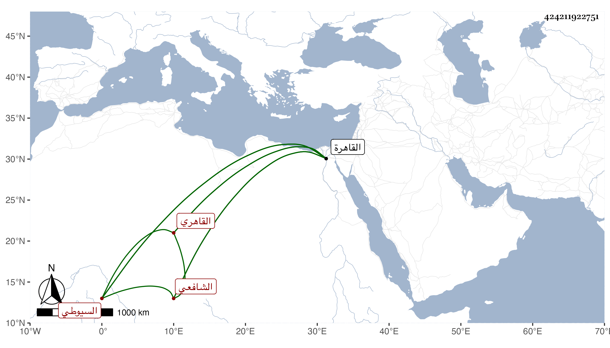

0902Sakhawi.DawLamic.ITO20230111-ara1.EIS1600.424211922751
Biography ID: 424211922751
923
إسماعيل بن عبد الخالق بن عبد المحيي بن عبد الخالق مجد الدين بن الإمام سراج الدين بن محيي الدين بن سراج الدين السيوطي القاهري نزيل الناصرية الشافعي أخو أحمد الماضي . ولد في سنة اثنتين وسبعين وسبعمائة بالقاهرة . وأحضر الشافعي أخو أحمد الماضي . ولد في سنة اثنتين وسبعين وسبعمائة بالقاهرة وأحضر في الرابعة على أبى الفرج بن القارئ غالب مشيخته وسمع من عمه العز عبد العزيز وجويرة الهكارية والجمال عبد الله بن المعين قيم الكاملية ومما سمعه عليه جزء الآجري والختلى وعلى التي قبله جزء من حديث البختري والتنوخي وطائفة وحدث سمع منه الفضلاء كابن أخيه ، وكان شيخا وقورا كثير التلاوة متكسبا بالشهادة صوفيا بالبيبرسية . مات في يوم الجمعة ثاني المحرم سنة تسع وثلاثين وصلى عليه عقب صلاتها بالحاكم . ذكره شيخنا في أنبائه فقال كان وقورا ملازما حانوت الشهود قليل الشر .
